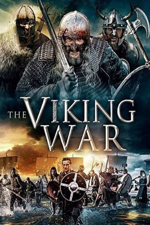

#11986 The Viking War
 
 IMDB-Wertung: 6.1 / 10
IMDB-Wertung: 6.1 / 10  Metascore: 0
Metascore: 0 
Ingrid und ihre Geschwister fliehen vor blutrünstigen Berserkern, die ihr Dorf eingenommen haben und dessen Bewohner zu grausamen und tödlichen Kämpfen zwingen. Aber die Berserker verfolgen sie erbarmungslos …
Jahr: 2019
Dauer: 103 Minuten
FSK: 12
Land: England Studio: Lighthouse Home EntertainmentTonspuren: DTS - ,
Untertitel:
Auflösung: 1080p (1920x800) Größe: 4833 MB
Genre: Geschichte
Regisseur: Louisa Warren
Drehbuch: Suzy Spade
Soundtrack: James R. Wilson
Darsteller:
- Darcie Lincoln als Ingrid
- Peter Cosgrove als Snorre
- Georgia Wood als Astrid
- Michelle Archer als Vigdis
- Shaila Alvarez als Loki
- Claudine-Helene Aumord als Heather
- David Carrozzo als Steiner
- Sarah T. Cohen als Siv
 Daniel Eghan als Odin
Daniel Eghan als Odin- Nick Field als Siguard
- Lati Gbaja als Berserker
- Tony Manders als Ragnor
- Adam Sugawara als Ivar
- Michael Townsend als Anglo Saxon
- Victor Toth als Leif
- Jerry Anton als Berserker Warrior
- Cassandra French als Turid
- Stuart Gilbam als Magnus
- Darrell Griggs als Gunner
- Richard Harfst als Olav
- Omari Lake-Pottinger als Knut
- Josh Lewindon als Rolf
- Elizabeth Mannering als Siggy
- Daniel Scott Pomerance als Torvi
- Derek Price als Athel
- Christine Sullivan als Bjorn
- Zuza Tehanu als Torrun
- Jason Teichman als Saxon
- Louisa Warren als Sigrunn
- Emily Wells als Helga
Datei: X:\2019(N-Z)\Viking War, The (2019, FSK12, 1920x800).mkv seit 01.11.2019
Festplatte: HD 2018(G-Z)-2019(A-Z)
 Es gibt insgesamt 62 Filme in der Gruppe '2019(N-Z)'
Es gibt insgesamt 62 Filme in der Gruppe '2019(N-Z)'